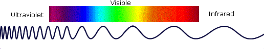
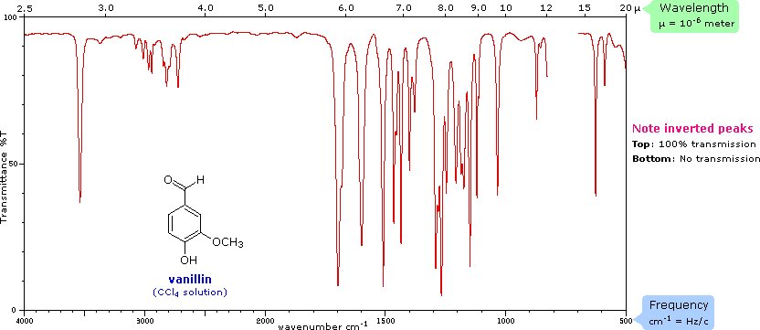
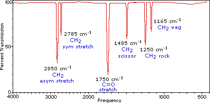
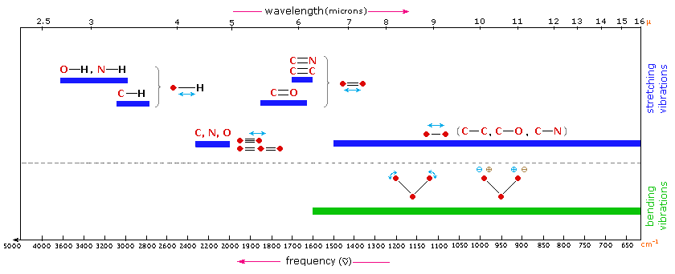
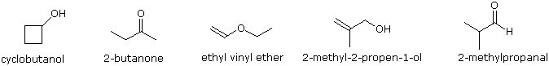

1. Introduction As noted in a previous chapter, the light our eyes see is but a small part of a broad spectrum of electromagnetic radiation. On the immediate high energy side of the visible spectrum lies the ultraviolet, and on the low energy side is the infrared. The portion of the infrared region most useful for analysis of organic compounds is not immediately adjacent to the visible spectrum, but is that having a wavelength range from 2,500 to 16,000 nm, with a corresponding frequency range from 1.9*1013 to 1.2*1014 Hz.

Photon energies associated with this part of the infrared (from 1 to 15 kcal/mole) are not large enough to excite electrons, but may induce vibrational excitation of covalently bonded atoms and groups. The covalent bonds in molecules are not rigid sticks or rods, such as found in molecular model kits, but are more like stiff springs that can be stretched and bent. The mobile nature of organic molecules was noted in the chapter concerning conformational isomers. We must now recognize that, in addition to the facile rotation of groups about single bonds, molecules experience a wide variety of vibrational motions, characteristic of their component atoms. Consequently, virtually all organic compounds will absorb infrared radiation that corresponds in energy to these vibrations. Infrared spectrometers, similar in principle to the UV-Visible spectrometer described elsewhere, permit chemists to obtain absorption spectra of compounds that are a unique reflection of their molecular structure. An example of such a spectrum is that of the flavoring agent vanillin, shown below.

The complexity of this spectrum is typical of most infrared spectra, and illustrates their use in identifying substances. The gap in the spectrum between 700 & 800 cm-1 is due to solvent (CCl4) absorption. Further analysis (below) will show that this spectrum also indicates the presence of an aldehyde function, a phenolic hydroxyl and a substituted benzene ring. The inverted display of absorption, compared with UV-Visible spectra, is characteristic. Thus a sample that did not absorb at all would record a horizontal line at 100% transmittance (top of the chart).
The frequency scale at the bottom of the chart is given in units of reciprocal centimeters (cm-1) rather than Hz, because the numbers are more manageable. The reciprocal centimeter is the number of wave cycles in one centimeter; whereas, frequency in cycles per second or Hz is equal to the number of wave cycles in 3*1010 cm (the distance covered by light in one second). Wavelength units are in micrometers, microns (μ), instead of nanometers for the same reason. Most infrared spectra are displayed on a linear frequency scale, as shown here, but in some older texts a linear wavelength scale is used. A calculator for interconverting these frequency and wavelength values is provided on the right. Simply enter the value to be converted in the appropriate box, press "Calculate" and the equivalent number will appear in the empty box. Infrared spectra may be obtained from samples in all phases (liquid, solid and gaseous). Liquids are usually examined as a thin film sandwiched between two polished salt plates (note that glass absorbs infrared radiation, whereas NaCl is transparent). If solvents are used to dissolve solids, care must be taken to avoid obscuring important spectral regions by solvent absorption. Perchlorinated solvents such as carbon tetrachloride, chloroform and tetrachloroethene are commonly used. Alternatively, solids may either be incorporated in a thin KBr disk, prepared under high pressure, or mixed with a little non-volatile liquid and ground to a paste (or mull) that is smeared between salt plates.
2. Vibrational Spectroscopy A molecule composed of n-atoms has 3n degrees of freedom, six of which are translations and rotations of the molecule itself. This leaves 3n-6 degrees of vibrational freedom (3n-5 if the molecule is linear). Vibrational modes are often given descriptive names, such as stretching, bending, scissoring, rocking and twisting. The four-atom molecule of formaldehyde, the gas phase spectrum of which is shown below, provides an example of these terms. If a ball & stick model of formaldehyde is not displayed to the right of the spectrum, press the view ball&stick model button on the right. We expect six fundamental vibrations (12 minus 6), and these have been assigned to the spectrum absorptions. To see the formaldehyde molecule display a vibration, click one of the buttons under the spectrum, or click on one of the absorption peaks in the spectrum.

The exact frequency at which a given vibration occurs is determined by the strengths of the bonds involved and the mass of the component atoms. For a more detailed discussion of these factors Click Here. In practice, infrared spectra do not normally display separate absorption signals for each of the 3n-6 fundamental vibrational modes of a molecule. The number of observed absorptions may be increased by additive and subtractive interactions leading to combination tones and overtones of the fundamental vibrations, in much the same way that sound vibrations from a musical instrument interact. Furthermore, the number of observed absorptions may be decreased by molecular symmetry, spectrometer limitations, and spectroscopic selection rules. One selection rule that influences the intensity of infrared absorptions, is that a change in dipole moment should occur for a vibration to absorb infrared energy. Absorption bands associated with C=O bond stretching are usually very strong because a large change in the dipole takes place in that mode. Some General Trends:
i) Stretching frequencies are higher than corresponding bending frequencies. (It is easier to bend a bond than to stretch or compress it.) ii) Bonds to hydrogen have higher stretching frequencies than those to heavier atoms. iii) Triple bonds have higher stretching frequencies than corresponding double bonds, which in turn have higher frequencies than single bonds. (Except for bonds to hydrogen).
The general regions of the infrared spectrum in which various kinds of vibrational bands are observed are outlined in the following chart. Note that the blue colored sections above the dashed line refer to stretching vibrations, and the green colored band below the line encompasses bending vibrations. The complexity of infrared spectra in the 1450 to 600 cm-1 region makes it difficult to assign all the absorption bands, and because of the unique patterns found there, it is often called the fingerprint region. Absorption bands in the 4000 to 1450 cm-1 region are usually due to stretching vibrations of diatomic units, and this is sometimes called the group frequency region.

3. Group Frequencies Detailed information about the infrared absorptions observed for various bonded atoms and groups is usually presented in tabular form. The following table provides a collection of such data for the most common functional groups. Following the color scheme of the chart, stretching absorptions are listed in the blue-shaded section and bending absorptions in the green shaded part. More detailed descriptions for certain groups (e.g. alkenes, arenes, alcohols, amines & carbonyl compounds) may be viewed by clicking on the functional class name. Since most organic compounds have C-H bonds, a useful rule is that absorption in the 2850 to 3000 cm-1 is due to sp3 C-H stretching; whereas, absorption above 3000 cm-1 is from sp2 C-H stretching or sp C-H stretching if it is near 3300 cm-1.
Stretching Vibrations
Bending Vibrations
Functional Class
Range (cm-1)
Intensity
Assignment
Alkanes
Alkenes
Alkynes
Arenes
Alcohols & Phenols
Amines
Aldehydes & Ketones
Carboxylic Acids & Derivatives
NitrilesIsocyanates,Isothiocyanates,Diimides, Azides & Ketenes
To illustrate the usefulness of infrared absorption spectra, examples for five C4H8O isomers are presented below their corresponding structural formulas. The five spectra may be examined in turn by clicking the "Toggle Spectra" button. Try to associate each spectrum (A - E) with one of the isomers in the row above it. When you have made assignments check your answers by clicking on the structure or name of each isomer.

4. Other Functional Groups Infrared absorption data for some functional groups not listed in the preceding table are given below. Most of the absorptions cited are associated with stretching vibrations. Standard abbreviations (str = strong, wk = weak, brd = broad & shp = sharp) are used to describe the absorption bands.
Characteristic Absorptions
Sulfur Functions
Phosphorous Functions
Silicon Functions
Oxidized Nitrogen Functions
Test your ability to use information from infrared and mass spectrometry to identify an unknown compound. Clicking the button opens a display in which four different problems of this kind may be selected. Answers are provided once an effort to solve the problem has been made.
Four Spectroscopy Problems
Return to Table of Contents
This page is the property of The Edvibe Team. Comments, questions and errors should be sent to contact@edvibe.co.ke. These pages are provided to the IOCD to assist in capacity building in chemical education. 05/05/2013